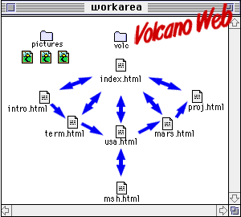

Wowza! You made a single web page! But, NOW, my HTML-literate friend, it is time to transform your ordinary long-scrolling "page" into a logically connected "web" of information.
After this lesson you will be able to:
Note: If you do not have the working documents from the previous lessons, download a copy now.
Are you a lumper or a splitter? Neither? Both?
For organizing information, sometimes it's better to "lump" things together; other times it is better to "split" them apart. Scrolling through long web pages is often tedious. Long, single web pages take longer to load over networks when compare to a series of smaller pages.
In many cases, you can identify logical points to "split" information into multiple web-pages. However, there is no magical formula, and opinions will vary. You should strike a balance between pages with breaks that parallel the content yet avoid forcing the reader to click through too many screens of options and sub-options before getting to the desired information. It also becomes important to build in hypertext links that help the reader navigate your information web as well as providing visual clues about their location within the web.
So far we have built one web page with a link to a shorter page. In lesson 8d we created a list of links that works as a table of contents by connecting them to named anchors for the different sections of the Volcano Web lesson. These same divisions might be sensible breakpoints for splitting the single long page into sub-pages.
Up to now we have created a directory called volc that contains our two HTML files (index.html, the lesson, and msh.html, a second web page). We also have a second directory called pictures that contains our graphic image files.
 We will now split the single Volcano Web file into a series of web pages, linked as shown in this schematic diagram. The entry point is a main index/cover page, index.html that has links that point to each of the other parts of our lesson:
Each part of the lesson will link back to the index as well as to the preceding and following pages. Also note the two-way link between usa.html and msh.html
Or if you prefer a more traditional directory listing structure:
| existing file structure | new file structure |
|---|---|
|
|
|
NOTE:To complete this lesson, we will have to create quite a few new files and do a fair amount of copy/pasting from the files you have been working on. Be sure that you are comfortable jumping around between the different application and document windows on your computer.
Also, we have changed the name of the volcano directory/folder to a shorter volc. (We like trying to keep our URLs from getting too long, but also not shrinking them too short that they are cryptic)
The first thing we will do is create the new index.html file, which will be the "cover" page for our Volcano Web lesson:
<hr> <h2><A NAME="intro">Introduction</a></h2> A <b>volcano</b> is a location where magma, or hot melted rock from within a planet, reaches the surface. :through
: <dt>Lipman, P.W. and Mullineaux (eds). (1981) <dd><I>The 1980 Eruptions of Mount St. Helens, Washington.</I> U.S. Geological Survey Professional Paper 1250. </dl>You may want to compare your HTML file to an example of how it should look at this point.
<b>In this Lesson...</b> <ul><i> <li><a href="#intro">Introduction</a> <li><a href="#term">Volcano Terminology</a> <li><a href="#usa">Volcanic Places in the USA</a> <li><a href="#mars">Volcanic Places on Mars</a> <li><a href="#project">Research Project</a></i> </ul>and edit it to read:
<b>In this Lesson...</b> <ul><i> <li><a href="intro.html">Introduction</a> <li><a href="term.html">Volcano Terminology</a> <li><a href="usa.html">Volcanic Places in the USA</a> <li><a href="mars.html">Volcanic Places on Mars</a> <li><a href="proj.html">Research Project</a></i> </ul>Compare your HTML file to an example of how it should look at this point.
NOTE: Be sure you understand the difference between a link written:<a href="#quest">go to questions</a>and another one written:<a href="quest.html">go to questions</a>
The next thing we will have to do is create the individual files for the other parts of our lesson. It will be easier if we first create a template file that we can modify for each of the different pages.
| HTML | Notes |
|---|---|
<html> <head> <title>XXXXXXXX</title> </head> <body> |
HEAD: In the head portion of each document, XXXXXXXX is the name of that section |
<h5>Volcano Web / <a href="index.html">Index</a> / <a href="xxxx.html">back</a> / <a href="xxxx.html">next</a></h5> |
NAVIGATION: At the top of each page we use a small header (h=5) to create navigation links. Index points back to the main cover page. next and back link to the following and preceding pages. You will have to fill in the appropriate file name in for xxxx.html. Notice how this provides a common visual clue to each of our web pages. |
<h2>XXXXXXXX</h2> : : : |
HEADER: Use a header=2 to put a title for that page. |
<hr> <address> <b><a href="index.html"> Volcano WebL</a> : XXXXXXXX </b><p> created by Lorrie Lava, <a href="mailto:lava@pele.bigu.edu"> lava@pele.bigu.edu</a> <br> Volcanic Studies, <a href="http://www.bigu.edu/"> Big University</a><p> <tt>last modified: April 1, 1995</tt> </address> <p> |
ADDRESS FOOTER: Note how the footer is now set up to indicate the name of the main web page (with a link back to it) as well as a line of text that indicates the name of the current section XXXXXXXX. Placing the name of the page here adds another important visual clue to the location of this page in the structure of the web we are creating. |
<tt>URL: http://www.bigu.edu/web/xxxxxxxx.html </tt> <p> </body> </html> |
URL: Be sure to modify the line that indicates the document's URL to reflect its file name xxxxxxxx.html |
| File Name | Section | Notes |
|---|---|---|
| intro.html | Introduction | As this is the first section, remove the line from the navigation section: <a href="xxxx.html">back</a> |
| term.html | Volcano Terminology | |
| usa.html | Volcanic Places in the USA | |
| mars.html | Volcanic Places on Mars | |
| proj.html | Research Project | As this is the last section, remove the line from the navigation section: <a href="xxxx.html">next</a> |
<a href="usa.html"> <img src="../pictures/left.gif" alt="** "> Return to <i>Volcano Web</i></a>Just to be consistent, you should also make the footer look like:
<hr> <address> <b><a href="index.html"> Volcano Web</a> : <a href="usa.html"> Volcanic Places in the USA</a> : Mount St. Helens</b> <p> created by Lorrie Lava, <a href="mailto:lava@pele.bigu.edu"> lava@pele.bigu.edu</a><br> Volcanic Studies, <a href="http://www.bigu.edu/"> Big University</a><p> <tt>last modified: April 1, 1995</tt> </address> <p> <tt>URL: http://www.bigu.edu/web/msh.html</tt> </body> </html>
Compare your web pages with this sample of how it should appear. If your pages are different from the sample or the hypertext links do not work correctly, review the text you entered in the text editor. In this lesson we created quite a few files and it is very easy to make typographical errors.
Review topics for this lesson:
Stylistically, your web pages are more readable if the hypertext links are integrated into the text of the content. This becomes more important as you create more web pages that have hypertext to link them together. Compare:
| "click here" links | ||
|---|---|---|
|
||
| integrated hypertext links | ||
|
The "Click here..." hypertext not only disrupts the flow of the text, but the link text "here" is not related to the intended item. As a suggestion, avoid writing any lines like "click here to return to the home page". Instead, write a clean link, e.g. <a href="home.html">Home Page</a> -- the clicking is inherent in the use of the web browser. Make the content readable and choose the link words to clearly indicate that the link leads to something related.
Take a look at the web page you are developing. Is it getting very long? Is there a logical division where you could "split" the page? Set up a cover/page index to your web pages and design appropriate links for navigating between them. Then design a template for your "sub-pages."
Now ask some friends/colleagues to view your pages. Do they prefer the "split" pages or the "lumped" one? Could they easily negotiate their way through your information?
NOW we get to the fancier stuff with advanced HTML... Fasten your seat-belts!
Writing HTML: Lesson 14: Lumping v.s. Splitting
©1994-2002
Maricopa Center for Learning and Instruction (MCLI)
Maricopa Community Colleges
Questions? Comments? Visit our feedback center
URL: http://www.mcli.dist.maricopa.edu/tut/tut14.html

This work is licensed under a Creative Commons Attribution-NonCommercial-NoDerivs 2.5 License.
{kind=link}
{kind=link}